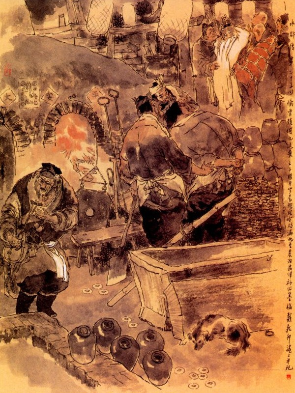
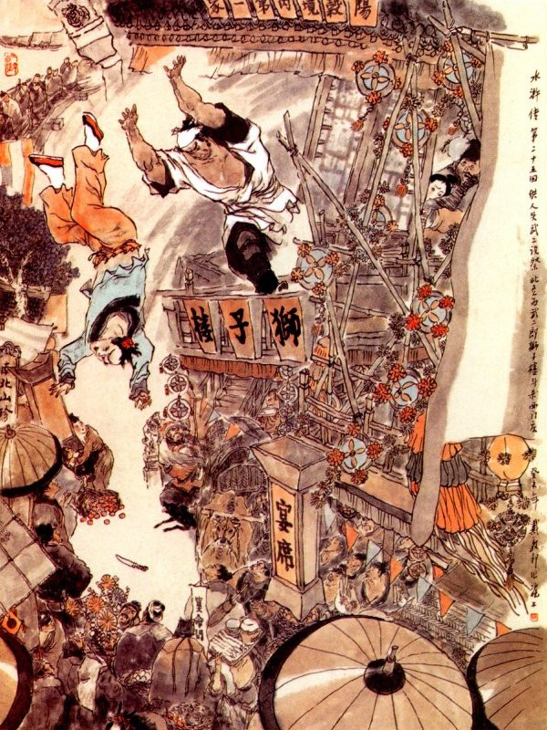

Lúc đó Hà Cửu Thúc nằm vật xuống thì người nhà người cửa đều xúm đen cả vào, kẻ thì phun nước, người thì kêu gọi, hồi lâu mới dần dần tỉnh dậy rồi Vương Bà sai người vực về nhà để chữa. Khi lũ đầy tớ vực Cửu Thúc về tới nhà, đặt nằm ở trên giường, người vợ thấy vậy bèn đến bên cạnh khóc lóc mà nói rằng:
- Lúc bước chân ra đi thì hớn hở vui cười, sao bây giờ trở về thì lại như thế? Xưa nay nào có thế bao giờ?
Bấy giờ Cửu Thúc trông ra không có ai ở đó, bèn bảo sẽ với người vợ rằng:
- Nàng không phải lo nghĩ, tôi đây có việc gì đâu? Cái này chỉ vì sáng hôm nay khi tôi ra đi, gặp Tây Môn Khánh là anh chàng bán thuốc trước cửa huyện, mời đi đánh chén mà lại đưa mười lạng bạc mà dặn việc khâm liệm Võ Đại nên cẩn thận kín đáo giúp cho. Sau đến nhà Võ Đại trông thấy chị chàng ấy không phải là người lương thiện thì trong bụng đã hơi có ý nghi ngờ. Kịp đến lúc trông vào mặt Võ Đại thì quả nhiên thấy nét mặt tím bầm, trong thất khiếu đều có vết máu mà trên môi đều có lộ vết răng cắn vào, chắc là chết vì trúng độc. Bấy giờ đã toan hô hoán lên, song ngặt vì hiện đấy không có ai là người chủ trương mà dây với thằng Tây Môn Khánh không phải tay vừa, tất là lỡ chuyện. Sau cũng toan im đi khâm liệm cho xong, nhưng lại sợ Võ Đại có người em là Võ Đô Đầu đánh hổ trên núi Cảnh Dương khi trước, vốn là một tay giết người mà không nháy mắt, nay mai sắp về tới đây thì việc này phải lôi thôi không tài nào tránh khỏi. Người vợ nghe đến đó thì nói luôn rằng:
- Phải, mấy hôm nọ tôi đã nghe rằng, con ông Kiều Lão ở phố sau là Vận Kha, đến phố Tử Thạch giúp Võ Đại bắt gian phu ầm cả phố lên, có lẽ là việc ấy hẳn, để tôi hỏi hắn xem sao? Còn đằng kia cứ để đám đầy tớ khâm liệm cho người ta, nếu người ta còn quàn đấy để đợi Võ Đô Đầu về mới chôn hoặc đem chôn ngay thì cũng chẳng việc gì mà ngại. Duy họ đem siêu hóa đi thì tất là có sự rắc rối, bây giờ ta sẽ đến đấy đánh lộn sòng mà thủ lấy mấy miếng trối xương rồi bọc với mười lạng bạc kia để làm tang chứng, sau này Võ Đô đầu về đây mà không hỏi đến thì ta cũng mặc đó, để lưu chút nhân tình với nhà Tây Môn Khánh mà thỉnh thoảng kiếm gạo của hắn cũng được chứ sao?
Hà Cửu Thúc nghe nói khen phải, liền gọi đám đầy tớ đến mà bảo rằng:
- "Hôm nay ta bị trúng cảm, không thể nào đến đấy được, vậy ta cho các ngươi cứ đến đấy khâm liệm cho người ta rồi hỏi xem bao giờ đem táng thì về báo cho ta biết. Các ngươi làm cho cẩn thận, tiền nong ở đấy ta cho tất cả mà chia nhau, đây không cần lấy đến".
Tụi đầy tớ vâng lời đến nhà Võ Đại để khâm liệm rồi một lúc trở về bảo rằng:
- Ba ngày nữa cất đám ra ngoài thành để siêu hóa.
Hà Cửu Thúc nghe nói xong cho tiền chúng đem về chia nhau rồi bàn với vợ đến ngày thứ ba để thi hành kế sách.
Bên kia Vương Bà hết sức giúp đỡ việc tang cho vợ Võ Đại, ngày thứ hai đón bốn vị sư về tụng kinh rồi đến ngày thứ ba thì đưa ra Hoà Nhân Trường ở ngoài thành để siêu hóa. Hôm ấy cùng mấy người phố xá gần đấy đi đưa đám. Còn chị chàng kia thì cũng ăn mặc tang phục mà khóc vờ khóc vĩnh, đi theo linh cữu Võ Đại ra đến Hóa Trường. Khi mới tới nơi vừa mới bắt đầu phát hoả thì thấy Hà Cửu Thúc tay cầm một nắm giấy tiền ở đâu chạy đến. Vương Bà cùng chị chàng kia vội đến mà hỏi rằng:
- May quá Cửu Thúc hôm nay đã được mạnh khỏe rồi.
Cửu Thúc nói:
- Dạo trước tôi có mua của Đại Lang một cái bánh bao lớn mà chưa kịp trả tiền; nay đem ít tiền giấy ra đây mà đốt trả Đại Lang vậy.
Nói xong cầm giấy tiền vào đốt rồi lại túm vào để giúp việc siêu hóa. Vương Bà cùng chị chàng kia đến cảm ơn mà rằng:
- Cửu Thúc lại có lòng tốt như thế thì thực là hiếm có, về nhà chúng tôi xin tạ ơn.
Hà Cửu Thúc đáp:
- Được, cái này là bổn phận của chúng tôi, tôi xin bà với nương tử cứ đến trai đường tiếp khách, để tôi xin trông nom ở đây.
Nói đoạn Vương Bà cùng chị chàng kia đều quay ra trai đường. Bấy giờ Hà Cửu Thúc sấn vào đống lửa vớ lấy hai mảnh xương trối rồi tắt lửa đi để xem thì thấy đầu xương đều mềm đen hết cả, chàng bèn giấu vào bọc rồi cùng đi vào trai đường nói chuyện. Được một lát việc siêu hóa đã xong, bọn đầy tớ đem xương tàn lấp bỏ xuống ao rồi mỗi người kéo đi về một ngả. Hà Cửu Thúc mang hai mảnh xương về nhà rồi lấy giấy viết rõ ràng ngày tháng tên tuổi các người đi tống táng rồi bọc với mười lạng bạc kia vào một cái túi mà cất ở trong buồng cẩn thận.
Bên kia từ khi vợ Võ Đại đưa ma trở về cũng bày dặt linh sàng cùng các đồ vàng mã để thờ chồng ở nhà dưới mà che mắt thế gian, còn tự mình thì cùng đi lại với Tây Môn Khánh ngày ngày trò chuyện vui đùa ở trên gác, mưa sớm, mây hôm, mây chiều trăng tối tha hồ phỉ chí tự do, không còn ngại ai ngăn cấm. Cái cảnh tượng hai gã gian dâm vụng trộm ở nhà mụ Vương Bà trước nay bỗng biến thành đôi nhân duyên như đúc như sơn như keo như rựa, khiến cho phố xá gần xa, không ai là không biết chuyện. Duy Tây Môn Khánh vốn là tay gian hoạt, đã từng có tiếng xưa nay, bởi thế ai cũng ỉm đi mà mặc cho thoả lòng sở dục.
Nhưng than ôi! Cái sự vui sướng chính đáng trên đời, xưa nay ông Hóa công không đãi người được trọn, huống chi là một kẻ tàn bạo đê hèn bỏ hết thiên lý nhân tâm để cầu lấy sự khoái lạc bên ngoài bì tướng thì lẽ nào mà hưởng thụ được lâu! Bởi thế cho nên thắm thoắt mới được hơn tháng trời mà cái nông nổi cực lạc sinh bi đã từ đâu đưa đến vậy. Võ Tòng khi tuân lệnh quan huyện áp tải các đồ châu báu vào kinh, giao cho thân nhân của quan huyện cẩn thận rồi một mình quay ra dạo chơi phong cảnh Đông Kinh trong mấy bữa mới nhận giấy trở về Dương Cốc. Khi đi trời còn tàn đông nên lạnh lẽo, đến khi trở vế đã bắt đầu sang tiết tháng ba, khí trời rất là ôn hoà dễ chịu duy trong lòng thì hoảng hốt không yên mà mong sao về ngay tới huyện, để thăm anh cả ở nhà. Một hôm Võ Tòng về tới huyện Dương Cốc, quan huyện xem giấy má, thấy công việc đến nơi đến chốn cẩn thận thì vui mừng trong dạ, liền thưởng cho một đỉnh bạc lớn và thiết cơm rượu rất là chu đáo, Võ Tòng nhận các đồ thưởng rồi vội vàng trở về phòng, thay đổi khăn áo, khóa cửa phòng lại, đi ra phố Tử Thạch thăm anh. Bấy giờ hai bên hàng phố trông thấy Võ Tòng đã về thì ai nấy đều lấy làm kinh sợ mà sắp sinh sự tới nơi. Khi Võ Tòng đến nhà Võ Đại, vén bức rèm lên bước chân vào cửa, chợt trông thấy phía trong có kê bàn thờ, trên bài vị đề mấy chữ "linh vị vong phu Võ Đại Lang" thì giật mình kinh ngạc, đứng dừng lại mà mở mắt to ra nhìn rồi nói một mình rằng:
- Có lẽ ta hoa mắt hay sao? Than ơi:
Cách nhau trăng chửa thêm ba,
Mà sao phong cảnh nay đà khác xưa!
Đoái trông mây khói mịt mờ,
Đào phai lý nhạt bây giờ hỏi ai?
Đoạn rồi lên tiếng gọi rằng:
- Tẩu tẩu ơi! Võ Nhị đã về đây.
Khi đó Tây Môn Khánh đương cùng chị kia hú hí nô đùa ở trên gác, bỗng nghe tiếng Võ Nhị gọi thì kinh sợ mất vía mà chạy tót lối sau cửa, sang nhà Vương Bà để trốn mất. Còn chị chàng khốn nạn kia hoảng hốt bất thần, miệng thì nói rằng:
- Thúc thúc ngồi chơi, tôi xuống bây giờ!
Tay thì vội vàng rửa hết son phấn, tháo hết trâm thoa, trút bỏ các đồ trang sức, với các đồ dùng vô loại xưa nay rồi mặc quần áo tang chế vào mà giả vờ khóc hờ hờ để đi xuống gác.
Võ Tòng thấy chị dâu bước xuống, liền hỏi ngay rằng:
- Tẩu tẩu hãy im đừng khóc nữa! Ca Ca tôi mất từ bao giờ? Bệnh tật gì, uống thuốc ai?
Chị chàng khốn nạn kia vừa khóc vừa trả lời rằng:
- Sau khi chú đi được mười lăm hôm thì bỗng dưng Ca Ca bị đau ruột đến tám chín ngày, tôi đã đi xem bói, tìm thầy thuốc, phí tổn không biết bao nhiêu, nhưng cũng không thế nào cứu được.
Võ Tòng lại nói:
- Quái lạ, xưa nay Ca Ca tôi chưa hề có chứng đau bụng bao giờ, sao ngày nay như thế mà thiệt mạng được.
Bấy giờ Vương Bà ở bên cạnh vách nghe tiếng Võ Tòng đã về thì sợ khi lỡ chuyện gian dâm, nên cũng chạy sang đấy để liệu chiều che chở, liền bảo Võ Tòng rằng:
- Đô Đầu không nên nghĩ thế, trời còn có lúc mưa gió bất thần, huống chi người ta lại giữ được suốt đời không việc gì hay sao?
Chị chàng kia lại nói đế thêm rằng:
- Mấy hôm nọ các công việc ở nhà, đều nhờ ở tay bà này giúp cả, nếu không có bà ấy thì quanh đây không ai giúp đỡ đến tôi.
Võ Tòng hỏi:
- Vậy thì bấy giờ mai táng ở đâu?
Chị chàng đáp:
- Cả nhà có một mình tôi, không thể nào tìm được đất mà mai táng, sau để đến ba bốn ngày rồi đành phải đem ra siêu hóa vậy.
- Ca Ca tôi mất đã mấy ngày hôm nay rồi?
- Hai hôm nữa là đoạn thất rồi.
Võ Tòng nghe nói ngần ngừ một lúc nghĩ ngợi rồi quay ra về huyện.
Ngậm ngùi một bước một đau,
Vì ai non nước vương sầu với xuân.
Võ Tòng trở về tới huyện, liền thay mặc quần áo trắng và thắt lưng đay ra ngoài để tang anh rồi dắt con dao chân dài chuôi ngắn, lưỡi mỏng, sống dày, lấy mấy lạng bạc giắt lưng và gọi một tên thổ binh đi theo, để ra phố mua sắm các đồ lễ vật.
Tối hôm ấy Võ Tòng sai tên thổ binh mang cơm canh vàng hương, đến bày ở giường thờ Võ Đại rồi chàng thắp đèn hương quỳ xuống trước linh sàng cúi lạy mà khấn rằng:
- Trăm lạy Ca Ca, lúc sinh thời Ca Ca vẫn là người nhu nhược, song ngày nay linh hồn cũng chẳng xa đâu, vậy nếu có điều chi oan khuất, xin Ca Ca báo mộng cho hay, để em sẽ vì Ca Ca trả thù trắng nợ.
Khóc xong thì cất tiếng khóc to, rất chiều thảm thiết, khiến cho phố xá ai nghe cũng phải cảm động, bồi hồi mà mang lòng thương xót:
Hồn oan vơ vẫn non sông,
Hạt châu tầm tả anh hùng ngẩn ngơ
Võ Tòng lăn khóc hồi lâu rồi trở dậy, sai thổ binh dọn cơm canh xuống hai người cùng ăn. Đoạn rồi lấy hai cái chiếu, cho tên thổ binh một cái để trải bên cạnh cửa trong mà nằm, còn Võ Nhị thì trải nằm ở dưới linh sàng Võ Đại. Bấy giờ chị chàng kia trông thấy Võ Tòng nằm đó thì cũng lên gác mà đi nghỉ một mình. Võ Tòng nằm vật mãi đến khi gần hết canh ba mà chưa sao ngủ được, quay vào nom tên thổ binh thì đã ngủ ngáy khè khè như chết. Chàng liền ngồi dậy ngẩng nom lên trước linh sàng thì thấy ngọn đèn pha lê như mờ như tỏ, rất chiều ảm đạm đê mê. Lắng tai nghe tiếng trống đã thấy ba canh ba khắc, bèn thở dài mà nói một mình rằng:
- Ca Ca ta lúc sinh thời vốn là người nhu nhược thì khi chết rồi còn biết làm sao được phân minh?
Chàng vừa nói dứt lời, thấy một trận lãnh khí từ dưới linh sàn bốc lên quanh quẩn ở trên làm cho đèn hương đều mờ mịt tối tăm mà giấy má trên vách đều bay phấp phới. Bấy giờ Võ Tòng mơ hồ kinh hãi đứng dựng hai hàng tóc gáy, bèn yên định tinh thần để nom thì thấy có người ở trong linh sàng đi ra mà nói lên rằng:
- Em ơi! Ta chết rất là oan khổ!
Chàng nghe lơ mơ thấy vậy, toan chạy đến để xem thì bỗng dưng người cũng không còn mà trận lãnh khí bỗng tan đâu mất.
Đèn hiu gió lạnh từng cơn,
Trời oan bể nghiệt hỡi hồn đâu đây!
Suối vàng ai hỡi có hay,
Trời còn để có thân này có thân này có khi.
Lúc đó Võ Tòng ngã nghiêng ngơ ngẩn hồi lâu rồi lại trông đến tên thổ binh thì vẫn ngủ yên như trước, lại nghĩ lại những điều trông thấy thì tựa hồ như giấc chiêm bao mà té ra không phải, chàng liền nghĩ thầm trong bụng rằng: “Cái này tất Ca Ca có bị điều oan ức, vừa rồi toan báo mộng cho ta, song lại bị thần khí của ta đánh bạt đi, cho nên không thể nào mà hiện lên rõ rệt ra được.”
Chàng nghĩ vậy thì trong lòng áy náy không yên, ngồi đợi mãi cho đến khi trời sáng. Khi ấy tên thổ binh trở dậy pha nước cho Võ Tòng súc miệng rửa mặt tử tế rồi chị chàng kia cũng từ trên gác chạy xuống mà hỏi rằng:
- Đêm qua chừng thúc thúc phiền muộn quá lắm chăng?
Võ Tòng lại hỏi:
- tẩu tẩu nói thực cho biết, Ca Ca tôi chết vì bệnh gì?
- Sao Thúc thúc vội quên thế? Hôm qua tôi đã nói là đau ruột mà.
- Vậy thì uống thuốc của ai?
- Vẫn hãy còn đơn thuốc ở kia.
- Ai đi mua áo quan?
- Cái đó nhờ Vương Bà mua hộ.
- Ai đem đi tống táng?
- Việc tống táng thì nhờ anh Đoàn Đầu Hà Cửu Thúc ở đằng phố kia.
Võ Tòng nghe rõ đầu đuôi đứng dậy nói rằng:
- Bây giờ tôi hãy xin vào buổi hầu trong huyện đã.
Nói xong dắt tên thổ binh ra ngoài đầu phố mà hỏi rằng:
- Ngươi có biết nhà Hà Cửu Thúc ở đâu không?
Tên thổ binh đáp:
- Dạo trước anh ta có đến mừng Đô Đầu, ngài đã quên rồi hay sao? Nhà anh ta ở trong ngõ phố Sư Tử kia.
- Được nếu vậy ngươi đưa ta đến đấy.
Nói đoạn cùng đi đến trước cửa nhà Hà Cửu Thúc rồi cho tên thổ binh về trước, bấy giờ Võ Tòng gõ cửa nhà Hà Cửu Thúc mà hỏi rằng:
- Hà Cửu Thúc có nhà không?
Hà Cửu Thúc mới ngủ dậy phảng phất nghe thấy tiếng Võ Tòng thì đã rụng rời luống cuống, vội vàng lấy túi tiền và lấy gói xương thu vào trong mình rồi chạy ra đón tiếp mà rằng:
- Đô Đầu về từ bao giờ, chúng tôi không được biết?
Võ Tòng nói:
- Tôi mới về hôm qua, nay nhân có chút việc, nên muốn tìm bác để nói chuyện, bác đi với tôi một lát.
- Vâng, chúng tôi xin đi theo, xin hãy đón Đô Đầu vào nhà xơi nước đã.
- Thôi, bất tất, xin tha phép cho.
Nói xong liền dẫn Cửu Thúc đến một tửu điếm kín đáo rồi gọi nhà hàng dọn rượu lên.
Cửu Thúc thấy vậy cung kính mà nói rằng:
- Ngài đi xa về chúng tôi chưa được đến mừng, có lẽ đâu mà lại dám phiền như thế?
Võ Tòng nói:
- Hãy xin cứ ngồi.
Bây giờ trong bụng Hà Cửu Thúc đã có tám chín phần đoán biết, song cũng không dám nói ra trước. Khi nhà hàng đem rượu ra, Võ Tòng ngồi lặng yên uống rượu mà không nói câu gì cả. Hà Cửu Thúc lại càng kinh sợ đổ toát mồ hôi mà không dám mở miệng hỏi. Võ Tòng cứ lẳng lặng uống rượu hồi lâu rồi mới vén áo lấy thanh đao nhọn ra để lên trên bàn làm cho tên nhà hàng trông thấy cũng kinh sợ không dám đến gần mà Hà Cửu Thúc thì mặt xám lại như gà cắt tiết.
Võ Tòng vừa sắn hai tay áo lên, vừa vớ lấy thanh đao nhọn rồi trỏ vào Hà Cửu Thúc mà nói rằng:
- Tiều tử đây tính người thô mãng, song cũng biết là nợ có chủ, oan có đầu, bác không việc gì mà kinh sợ, cứ nói thực cho tôi biết rõ căn do về việc Ca Ca tôi chết. là không can thiệp gì đến bác nữa. Tôi nếu có lòng hại bác thì không phải là tay hảo hán, song nếu có một câu gì sai dối thì con dao của tôi tất phải tặng bác và bốn năm cai suốt sát. Bây giờ không cần nói xa xôi gì cả, hãy cứ thuật ngay cái tình trạng Ca Ca tôi lúc chết thế nào xin cho tôi biết? Võ Tòng nói xong, khoanh tay chống ra hai bên sườn rồi trợn ngược hai con mắt tròn xoe mà nhìn vào Hà Cửu Thúc.
Hà Cửu Thúc móc trong bọc lấy cái túi kia ra, đặt lên bàn mà nói rằng:
- Dám thưa Đô Đầu, một cái túi này là cái tang chứng rất lớn đây.
Võ Tòng cất lấy cái túi mở ra xem thì thấy có hai mảnh xương đen và một đỉnh bạc mười lạng, liền hỏi rằng:
- Sao cái này lại gọi là tang chứng lớn được?
Hà Cửu Thúc liền đem đầu đuôi câu chuyện Tây Môn Khánh mời đi uống rượu, cho đến lúc làm lễ siêu hóa Võ Đại như thế nào nhất nhất thuật lại cho Võ Tòng nghe và lại nói rằng:
- Hai mảnh xương đen mềm đó, đích thực là một tang chứng chết vì thuốc độc, còn mảnh giấy chép ngày tháng, tên họ các người đưa đám đây, tức là tờ khẩu cung của tôi, xin Đô Đầu xét cho.
- Vậy thì gian phu là ai?
- Cái đó tôi không được biết đích, song trước đây nghe nói có tên Vận Kha ở đằng kia, đã một phen cùng với Đại Lang tróc nã gian phu không được. Việc đó ầm ĩ cả phố, ai ai cũng biết, xin Đô Đầu cứ hỏi Vận Kha khắc rõ.
Võ Tòng gật đầu nói:
- Nếu vậy xin phiền bác đi với tôi một lúc.
Nói xong lại giắt dao vào lưng, bọc gói xương và tiền vào túi mà tính trả tiền hàng mà cùng Hà Cửu Thúc ra đi.
Khi tới cửa nhà Vận Kha, thấy anh chàng đương cắp cái thúng khảo, đi đong gạo về, Hà Cửu Thúc liền gọi:
- Vận Kha có biết vị Đô Đầu này không?
Vận Kha đứng dừng lại nhìn Võ Tòng rồi đáp rằng:
- Có, tôi biết từ khi giải hổ về huyện trước. Nhưng hai ông tìm tôi có việc gì?
Nói đoạn lại tiếp luôn rằng:
- Tôi bây giờ còn bố già ngoại sáu mươi tuổi, không thể nào bỏ đấy mà đi theo đuổi hầu kiện với các ông được.
Võ Tòng nghe nói có ý cảm động mà khen rằng:
- Thằng em giỏi.
Nói đoạn liền móc túi lấy 5 lạng bạc ra mà tiếp luôn rằng:
- Tiền đây em đem về nuôi lão phụ rồi theo ta đến đằng này ta hỏi chuyện?
Vận Kha mừng thầm trong bụng "Được 5 lạng bạc này để nuôi bố thì đi với họ đến bốn năm tháng vẫn không lo ngại gì!", liền nhận lấy tiền đem cả vào cho bố rồi quay ra đi với hai người. Khi tới một hàng cơm kia, Võ Tòng dặn nhà hàng làm cơm ba người ăn rồi bảo với Vận Kha rằng:
- Em còn bé tuổi mà có lòng hiếu thuận như thế, thực là hiếm có. Lúc nãy ta đưa cho 5 lạng bạc đó là để em tạm tiêu rồi sau đây ta còn có việc nhờ đến em, đến khi xong việc ta sẽ đãi em mười lăm lạng bạc nữa làm vốn. Bây giờ em hãy nói rõ ràng cho ta biết đầu đuôi câu chuyện em cùng Ca Ca ta đi bắt gian thế nào đã?
Vận Kha nghe nói lấy làm hả dạ, liền nói rõ đầu đuôi khi tìm Tây Môn Khánh, cùng là mưu mẹo lúc thi hành kế bắt gian, cho đến lúc Võ Đại bị đánh ngã rồi sau bị chết thế nào, cho Võ Tòng nghe rất kỹ càng một lượt, Võ Tòng hỏi:
- Những lời nói có đích xác hay không?
- Đích xác lắm, dẫu đến cửa quan tôi cũng nói thế thôi.
Võ Tòng liền gọi nhà hàng đem cơm rượu lên ba người cùng ăn đoạn rồi trả tiền mà ra đi. Hà Cửu Thúc nói rõ với Võ Tòng rằng:
- Bây giờ xong việc rồi tôi xin phép Đô Đầu để về nhà.
Võ Tòng nói:
- Không được, bác hãy đi với tôi, đương lúc cần có hai người làm chứng cho mới được.
Nói đoạn liền đem hai người đến huyện để kêu tỏ mọi lẽ oan khuất và xin để báo thù cho anh. Quan huyện nghe nói, bèn truyền lấy khẩu cung hai người chứng tá rồi bàn với đám nha lại để định kế thi hành, nguyên đám quan nha ở đây đối với Tây Môn Khánh rất là có tình thân mật xưa nay, nghe thấy chuyện vậy thì ai nấy cũng bàn định với nhau, muốn gạt xếp im đi cho rảnh.
Bấy giờ quan Huyện bảo Võ Tòng rằng:
- Võ Tòng ngươi đã làm đến chức Đô Đầu, sao mà không biết pháp luật? Xưa nay thường nói: "Gian dâm phải có đôi, trộm cướp phải có tang, giết người phải có thương tích", nay anh người đã chết rồi, xác không còn lại, chính người lại không bắt sự gian, vậy mà chỉ bằng cứ ở miệng hai đứa làm chứng này mà cho ngay là việc giết người thì có lẽ không thể nào làm được, người nên nghĩ kỹ xem nên làm thì hãy làm. Võ Tòng bèn đem gói xương và mười lạng bạc ra trình quan huyện mà rằng:
- Cái này có tang chứng hẳn hoi, há phải rằng chúng tôi đặt để nên chuyện đâu? Xin quan lớn xét kỹ cho mới được.
Tri huyện xem xong đáp rằng:
- Nếu vậy ngươi để đây, ta xét kỹ xem sao nếu việc có thể làm được thì ta sẽ bắt hỏi cho ngươi.
Võ Tòng tạ ơn lui ra rồi giữ Hà Cửu Thúc và Vận Kha ở lưu trong nhà, để đợi khi đòi hỏi. Bên kia Tây Môn Khánh nghe biết chuyện đó, liền đem tiền đút lót đám quan lại cho đâu đấy đều được thoả thiếp hết cả. Đến sang hôm sau Võ Tòng lại lên thúc giục quan huyện xin cho tra xét thì quan Huyện đưa trả lại gói xương và mười lạng bạc mà bảo với Võ Tòng rằng:
- Việc này ngươi chớ nên nghe càn người ta mà thưa kiện Tây Môn Khánh, vì không có một chút gì là đúng lẽ cả, thánh nhân đã dạy rằng: “những việc trước mắt, chưa hẳn đã tin; Lời nói sau lưng, lấy đâu làm chắc!" Ngươi không nên nóng nảy làm liều mà lỡ việc!
Bấy giờ tụi nha lại đứng hai bên cũng giở ngọn lưỡi không xương ra mà tán với Võ Tòng rằng:
- Đô Đầu ơi! Những việc án mạng xưa nay, phải đủ có năm thứ là: Xác người, dấu thương, chứng bệnh, đồ hành hung, cùng là tung tích thì mới có thể tra xét được. Nay Quan đã dạy như thế thì hãy để thong thả xem sao đã.
Võ Tòng nghe vậy lặng ngắt không nói và bèn thu lấy gói xương và tiền, giao cho Hà Cửu Thúc giữ rồi lại đem hai người trở về phòng, trong bụng vừa phần buồn bực, vừa phần căm tức mà phàn nàn một mình rằng: “Đáng tiếc cho lộc nước lương dân, phí tổn kể hết bao nhiêu để cung phụng cho quan lại! Nhưng than ôi! Đem tiền mà vứt xuống sông còn được thấy tăm thấy bóng, chớ đem tiền mà cung phụng cho đám ấy thì thực là vô ích cho đời. Nay có một việc rõ ràng như thế mà không thể nào xét đoán cho ra, huống chi những việc u minh khó hiểu thì bấy giờ xử trí làm sao? Thực là mất tiền mất của mà phó tính mạng biết bao xích tử lương dân cho đám mèo mù này, còn bao giờ cai trị được yên? Những hạng người ấy ngoài hai chữ kim tiền, còn có biết chi là luân thường pháp luật! Thôi anh hùng sự nghiệp mong ở tay mình, oán trả ân đền, tự mình uy phúc can chi mà cậy những con người vô ích thêm phiền?”
Cũng tai cũng mắt trên đời,
Ân đền oán trả quyền trời riêng cho.
Đường đường một đấng trượng phu,
Xông pha xương núi máu hồ có khi,
Thân mình làm phúc làm uy,
Những loài máu lạnh nói chi thêm buồn.
Võ Tòng nghĩ vậy, liền gọi một tên thổ binh bắt làm cơm cho Hà Cửu Thúc và Vận Kha ăn cơm ở nhà rồi đem mấy thổ binh đi ra phố mua gà vịt, sỏ lợn cùng các thức rượu chè hoa quả và mua thêm mấy tờ giấy trắng cùng là bút mực, để đem đến nhà Võ Đại.
Bấy giờ chị chàng khốn nạn kia nghe nói việc Võ Tòng thưa kiện Tây Môn Khánh, đã bị quan trên xóa bỏ đi rồi thì trong lòng lấy làm hả hê, không còn sợ điều chi nữa. Đương khi đắc ý một mình thì chợt thấy Võ Tòng cùng mấy tên thổ binh mang các lễ vật đến nhà mà nói rằng:
- Ngày nay là tuần Tứ Tửu Vong Huynh, dạo trước ở đây cũng có quấy quả mấy người bà con phố sá, vậy tôi muốn gọi là kiếm chút lễ mọn, trước là cúng anh, sau nữa là vì tẩu tẩu mà tạ ơn xóm giềng cho phải đạo.
Chị chàng hỏi rằng:
- Việc gì mà phải tạ ơn họ?
- Đó là lễ phép phải thế, ta không nên bỏ thiếu mới được.
Nói đoạn sai thổ binh đem các lễ vật bày lên linh sàng, thắp đèn hương khấn lễ hồi lâu rồi sai kê bàn ghế bày các hoa quả cùng rượu thịt ra. Lại sai hai tên thổ binh canh giữ cửa trước cửa sau cho cẩn thận rồi gọi chị chàng kia mà bảo rằng:
- Bây giờ tẩu tẩu phải ở đây mà tiếp khách, để tôi đi mời khách đến đây.
Nói xong bắt đầu sang mời Vương Bà ở bên cạnh vách. Vương Bà nhất định từ chối không đi. Võ Tòng không nghe cố tình mời cho bằng được. Sau Vương Bà không chối được, phải nhận thiếp mời mà theo Võ Tòng sang. Võ Tòng lại bảo chị chàng kia ngồi chủ tọa mà mời Vương Bà ngồi đối diện. Vương Bà cũng biết việc Tây Môn Khánh là vô sự rồi, nên cũng phóng tâm ngồi đánh chén, xem Võ Tòng xử trí ra sao? Võ Tòng dàn xếp xong rồi, bèn đi ra đi mời anh hàng bạc ở phía dưới phố là Diêu Văn Khanh. Văn Khanh cáo từ không dám nhận. Võ Tòng kéo đi mà nói rằng:
- Bác sang chơi xơi chén rượu nhạt, một lát lại về ngay có chi mà từ chối.
Văn Khanh phải vâng lời, theo đến, ngồi vào ghế dưới Vương Bà. Chàng lại đến mời mấy người bên kia phố nữa là anh Triệu Trọng Minh bán hàng mã và bác Hồ Chánh Khanh bán rượu, nguyên là một tay thư lại xuất thân khi trước. Hai người dẫu có chối từ, song Võ Tòng cầu cạnh lôi mời thì anh nào cũng kinh khiếp hồn mà phải theo lời hết cả. Khi tới nơi Võ Tòng mời Hồ Chánh Khanh ngồi trên Triệu Trọng Minh ngồi dưới rồi lại đến nhà Trương Công ở bên cạnh Triệu Trọng Minh để mời. Bấy giờ Trương Công đương ngồi nhà, thấy Võ Tòng đến thì giật mình kinh sợ mà rằng:
- Đô Đầu đến chơi chẳng hay có việc gì?
Võ Tòng nói:
- Nhà anh tôi khi trước đến phiền lụy phố sá cũng nhiều, nay muốn mời các ông đến chơi xơi chén rượu suông đó thôi.
- Chết nỗi chúng tôi không có lễ nghi gì đến, sao Đô Đầu còn cho ăn uống như vậy?
- Có gì đâu, gọi là chút lòng thành, xin ông đi cho.
Nói đoạn kéo phăng Trương Công đến mà ngồi dưới cánh Diêu Văn Khanh.
Khi đó cửa trước cửa sau bắt cài then cẩn thận rồi Võ Tòng mời bốn người hàng phố, cùng Vương Bà và chị chàng kia ngồi tử tế đây đấy, còn mình thì xách một cái ghế ngồi vào đầu bàn rồi sai thổ binh rót rượu để mời. Võ Tòng cất tiếng lên nói rằng:
- Xin các vị cao lân tha lỗi cho tôi là kẻ thô mãng mà chứng giám cho.
Mọi người nghe nói đều cung kính đáp rằng:
- Đô Đầu mới đi xa về, chúng tôi chưa có gì đến mừng, nay lại còn quấy quả thế này, thực là không phải.
Võ Tòng lại cất chén mời mà rằng:
- Thực là sơ sài không có gì, xin các ngài đừng cười.
Chúng vâng lời uống rượu, song anh nào cũng gờm gờm không hiểu ra sao. Khi uống rượu được vài tuần Hồ Chánh Khanh đứng dậy cáo từ có việc bận xin về. Võ Tòng gạt lại mà rằng:
- Không về được, đã đến đây dẫu bận cũng xin ngồi một lát đã.
Chánh Khanh nghe nói thì trong bụng sôi nổi như ngọn trào khi lên khi xuống, không hiểu tình ý ra làm sao, đã mời ăn uống mà còn đãi như thế thì phải đành ngồi xuống vậy. Võ Tòng gọi thổ binh rót rượu mời khách uống. Khi mỗi người uống được độ bảy chén rồi thì Võ Tòng lại quát thổ binh hãy dọn bàn sạch đi, để lát nữa sẽ uống. Đoạn rồi Võ Tòng đứng lên lau bàn cho sạch.
Chúng thấy vậy toan đứng vậy cản, Võ Tòng lại giơ hai tay giữ lại mà nói rằng:
- Tôi đương sắp nói chuyện, xin các ngài hãy ngồi đó. Trong đám các ngài có ai là người biết viết?
Diêu Văn Khanh trỏ vào Hồ Chách Khanh mà đáp rằng:
- Ông Hồ Chánh Khanh đây viết giỏi lắm.
Võ Tòng nói rằng:
- Vâng, xin ngài viết hộ cho.
Nói đoạn xắn tay áo lên, thò vào trong áo rút một con dao nhọn ra, đến phắt một cái rồi đưa bốn ngón tay con bên phải, lồng vào quai dao, còn ngón tay cái thì để khoanh chống bụng, trừng hai con mắt nghiêm nghị dữ dội mà nói rằng:
- Xin các vị biết cho rằng: nợ có chủ, oán có đầu chúng tôi chỉ cần các ngài làm chứng đó thôi.
Nói đoạn Võ Tòng đứng lên nắm chặt lấy đầu chị dâu mà tay trỏ vào Vương Bà bắt phải ngồi im. Bọn hàng phố anh nào anh nấy trông thấy đều khiếp kinh hồn vía, đều nơm nớp nhìn mà không dám thở.
Võ Tòng lại nói rằng:
- Các vị cao lân không việc chi mà sợ, tôi tuy là một anh lỗ mãng chết cũng không cần, song có oán thì báo oán, có thù thì báo thù, không can gì để các ngài cả. Chỉ phiền các ông làm chứng cho thôi. Nếu ngài nào đứng dậy chạy trước thì đừng có trách, hãy xin mời dăm bảy nhác dao rồi Võ Tòng sẽ đền mạng.
Chúng nghe nói đều ngây mặt đờ lưỡi không còn anh nào dám cựa. Võ Tòng nhìn vào Vương Bà mà quát lên rằng:
- Con mụ già chó má này, nghe tao nói: Tính mạng Ca Ca ta toàn thị trong tay mày làm hại, để rồi tao hỏi tội mày?

Đoạn rồi quay lại thết chị chàng kia rằng:
- Đồ dâm phụ này, nghe ta nói: Tính mạng Ca Ca ta, mày mưu sát thế nào, muốn sống nói thực, ta sẽ tha cho.
Chị chàng kia nói rằng:
- Thúc Thúc rõ vô lý quá, Ca Ca bị đau bụng rồi chết, có liên can gì đến tôi. Vừa nói dứt lời, thi Võ Tòng đặt phịch con dao trên bàn, giơ tay nắm lấy tóc chị chàng kia, giơ chân đạp cái bàn lăn ra rồi với qua cái bàn xách chị chàng vật nằm lăn xuống trước mặt linh sàn.
Đoạn rồi giơ chân đạp xuống giữ lấy chị kia mà tay phải cầm con dao trỏ vào mặt Vương Bà mà bảo rằng:
- Con sọm già này, muốn sống phải nói thực ra.
Mụ già đê mạt ấy không còn lối nào thoát thân đi được, liền nói lên rằng:
- Xin Đô Đầu bớt giận, để tôi nói thực mọi điều.
Võ Tòng gọi thổ binh ra đem giấy mực nghiêng bút để lên bàn rồi cầm dao trỏ Hồ Chánh Khanh bảo rằng:
- Phiền bác, cứ nghe câu gì là biên vào câu đó cho tôi.
Hồ Chánh Khanh đánh trống ngực thình thình, đáp lại rằng:
- Vâng. vâng. Chúng tôi xin viết ạ!
Nói đoạn giơ tay lên mài mực rồi cầm bút, vuốt giấy mà bảo Vương Bà rằng:
- Bà lão nói thực đi.
Vương Bà lại giở giọng nói rằng:
- Không việc gì đến tôi thì bảo tôi nói thế nào?
Võ Tòng quát lên rằng:
- Con cáo già công việc ta biết cả rồi, còn toan chối thế nào? Nếu không thì ta phải xả con dâm phụ này ra rồi sẽ giết con cáo già.
Nói đoạn liền giơ dao trước mặt chị chàng kia mà liếc đi liếc lại. Chị chàng vội kêu lên rằng:
- Thúc thúc tha tôi, tôi xin nói.
Võ Tòng lại xách dậy, đặt trước linh sàn quát lên rằng:
- Dâm phụ nói mau! Chị chàng kia, lúc đó kinh khiếp, bạt cả hồn vía phải đem sự thực từ khi đánh rơi cái nạng vào đầu Tây Môn Khánh, cho đến khi mụ Vương Bà mời sang may áo rồi thế nào. kể ra hết một lượt. Võ Tòng bảo Hồ Chánh Khanh rằng:
- Nói câu gì thì viết vào giấy cho tôi.
Vương Bà thấy chị chàng kia thú thực cả rồi thì cũng không thể nào mà chối được, liền phải theo lời mà cung nhận hết thảy. Võ Tòng lại bảo Hồ Chánh Khanh viết giấy cẩn thận, bắt hai người điềm chỉ viết tên ở dưới rồi bốn người hàng phố ký tên sau. Đoạn rồi lấy cái đai nịt của tên thổ binh, trói con sọm già lại rồi cuộn tờ giấy khẩu cung đút vào túi áo mà gọi tên thổ binh rót rượu bưng lên cúng ở trước mặt linh sàn. Bấy giờ bắt cả hai mụ đàn bà quỳ xuống trước linh sàn rồi Võ Tòng gạt lệ khấn rằng:
- Linh hồn Ca Ca chắc còn phảng phất đâu đây, ngày nay tiểu đệ xin báo thù rửa hận, xin Ca Ca chứng dám cho.
Khấn xong bèn gọi thổ binh đem giấy tiền ra. Khi đó con dâm phụ kia thấy sự thể nguy cấp đến nơi để toan cất tiếng để kêu. Bắt đầu Võ Tòng nắm tóc giằn xuống, hai chân dặm lên hai vai mà cởi phăng áo bụng ra mà đưa mũi dao nhọn vào rạch một cái thật mạnh, phăng hẳn ruột ra. Đoạn rồi mồm ngậm lấy dao, hai tay móc vào lấy bộ ruột ra, để lên trước bàn thờ. Lại cúi xuống cắt đầu con dâm phụ, máu me chảy đầm đìa lai láng ra nhà, anh nào trông thấy cũng xanh mặt tái người, chỉ bưng mặt ngồi nhìn mà không hề dám khuyên can chi cả.
Võ Tòng lại sai thổ binh lên gác lấy một cái chăn xuống, bọc đầu chị chàng kia vào và lau sạch dao sạch sẽ, đút vào trong bao rồi rửa sạch hai tay mà quay ra bảo với mọi người rằng:
- Thế này khí phiền đến các vị cao lân, xin các ngài thứ lỗi cho. Mời các ngài lên gác ngồi chơi một lát rồi tôi sẽ về ngay đây.
Đám kia len lén nhìn nhau không hiểu tình ý ra sao, đành phải theo lời mà kéo nhau lên gác. Võ Tòng lại sai thổ binh kéo cổ Vương Bà lên gác rồi đóng cửa lại mà bắt thổ binh canh giữ ở dưới. Bấy giờ chàng ta xách cái đầu người ra đi, thẳng đến hàng thuốc nhà Tây Môn Khánh mà hỏi tên chủ quán rằng:
- Đại quan nhân có nhà không?
Chủ quán đáp:
- Bẩm vừa mới đi rồi.
Võ Tòng lại nói:
- Bác làm ơn ra đây tôi hỏi câu chuyện này.
Chủ quán vốn biết Võ Tòng xưa nay, nên không dám cưỡng lời, bèn theo Võ Tòng ra phố, Võ Tòng dẫn vào một cái ngõ vắng làm bộ giở mặt hỏi anh kia rằng:
- Anh muốn sống hay muốn chết?
Chủ quán run lên bần bật mà đáp rằng:
- Bẩm Đô Đầu! chúng tôi có dám xâm phạm việc gì đâu?
- Ừ! Nhưng mà anh muốn chết thì thôi, bằng muốn sống phải nói rõ cho ta biết rằng, Tây Môn Khánh hiện giờ ở đâu?
- Bẩm ngài, vừa rồi ông ta đi với một người bạn, đến uống rượu ở Đại tửu lâu bên cầu Sư Tử đó.
Võ Tòng nghe dứt lời thì quay ngoắt mình mà chạy thẳng làm cho tên chủ quán ngây hẳn người ra, hồi lâu mới trở về được hàng. Võ Tòng chạy vội đến Tửu lâu bên cầu Sư Tử, hỏi tửu bảo rằng:
- Tây Môn Khánh đại lang uống rượu với ai đó?
Tửu bảo đáp:
- Uống rượu với một tay tài chủ ở phòng gác về mé cạnh đường phố.
Võ Tòng lặng ngắt, đi thốc lên gác, đến gần phòng đó, nom vào chắn song cửa sổ, thấy Tây Môn Khánh đương ngồi chủ vị, một người nữa ngồi khách vị và hai đứa con hát ngồi ở hai bên. Chàng liền mở bọc chăn ra, tay xách đầu dâm phụ máu chảy long tong xuống, tay phải rút thanh đao ra rồi vén rèm nhảy vào mà cầm đầu dâm phụ ném vào mặt Tây Môn Khánh.
Tây Môn Khánh ngẩng đầu trông lên thấy Võ Tòng đến thì giật mình kinh sợ, kêu lên một tiếng, bắc cẳng lên cửa sổ toan tìm đường tháo chạy. Dè đâu trông ra cửa sổ, lại chính đường phố đấy, liền nhụt cẳng lại không dám chạy mà trong bụng thì hoảng hốt, không biết làm thế nào? Đương khi bồi hồi kinh sợ thì Võ Tòng đã vỗ tay nhảy lên bàn làm cho bát đĩa trên bàn đều đổ nhào cả xuống.
Hai đứa con hát trông thấy, kinh sợ mất vía, không đứa nào chạy được nữa, anh tài chủ kia cũng rụng rời chân tay mà ngã lăn ra gác. Tây Môn Khánh thấy Võ Tòng hung tợn như vậy thì vội vàng giơ tay trỏ vờ một cái rồi cất chân bên hữu mà đá luôn. Võ Tòng cứ xông vào rồi né mình tránh qua một bên, bất đồ bị Tây Môn Khánh đá ngay vào tay phải làm cho con dao bắn hản ra cửa mà rơi xuống phố, Tây Môn Khánh thấy Võ Tòng rơi mất dao thì phóng tâm không sợ, liền giơ tay phải lên dứ đánh rồi tay trái nhằm vào giữa mỏ ác Võ Tòng mà đấm, Võ Tòng né mình tránh thoát rồi thừa thế xông vào ngay cạnh sườn Tây Môn Khánh, tay tả vòng ra ôm lấy cả đầu và vai, còn tay hữu thì nắm lấy chân trái Tây Môn Khánh mà quát lên rằng:
- Xuống.

Tây Môn Khánh lúc đó một là bị oan hồn ám ảnh, hai là bị lương tâm quở phạt, ba là tuy hơi sức có khoẻ, song không khi nào địch nổi Võ Tòng kia được, nên vừa bị Võ Tòng gạt một cái thì đầu nặng bồng, chân nhẹ tếch mà ngã lăn xuống dưới mặt phố, nằm lặng hẳn người, phát hôn đến chương thứ mười một, hai bên phố sá thấy vậy, ai nấy đều kinh sợ bất thần. Đoạn rồi Võ Tòng cúi xuống chân ghế, nhặt lấy cái đầu đứa dâm phụ xách vào tay, nhún mình vót qua cửa sổ mà nhảy thẳng xuống mặt phố rồi nhặt lấy con dao cầm lăm lăm ở tay. Bấy giờ thấy Tây Môn Khánh nằm chết dở ở dưới mặt đất, hai con mắt chỉ lừ đừ dấp dính mà không sao cựa được; Võ Tòng liền cầm đao xông đến, cắt phăng lấy đầu Tây Môn Khánh rồi túm lấy hai cái đầu làm một mà xách về phố Tử Thạch. Khi tới nhà bày hai cái đầu lên linh sàn để cúng rồi lại gạt nước mắt mà khấn rằng:
- Ngày nay em đã giết hai đứa gian phu dâm phụ để báo thù cho Ca Ca, vậy linh hồn Ca Ca có thiên thì về chốn Thiên Đường mà nương tựa, còn đây em xin siêu hóa cả đi.
Chàng khấn xong liền bảo thổ binh mở cửa gác, lên gọi các người ở trên gác xuống rồi một tay lại xách hai cái đầu người và một tay cầm con dao lăm lăm mà nói với mọi người rằng:
- Tôi có một điều này, cần phải nói với các vị cao lân, xin các ngài hãy ở đây, không đi đâu được bây giờ!
Mấy người hàng phố đều kinh sợ một phép, chắp tay mà đáp rằng:
- Có việc chi xin Đô Đầu cứ chỉ giáo cho, chúng tôi đâu dám trái lời ngài dạy!
Oai hùm tung động giang sơn,
Dưới đao nghĩa hiệp chứa chan máu tình,
Bể trầm muôn trượng mông mênh,
Dẹp tan ngọn sóng khuynh thành từ đây.
Xót Riềng con tạo chua cay
Đem gươm oan nghiệt trêu tay anh hào.
Một cơn bình địa ba đào
Nặng lòng cốt nhục kiếp nào đã khuây!
Vời trông trời rộng đất dầy,
Anh hùng khi cũng vơi đầy giọt châu!
Lời bàn của Thánh Thán
Ta thường nói rằng: Chẳng lên Thái Sơn, chẳng biết chỗ cao thiên hạ, lên Thái Sơn chẳng lên tới mặt trời thì chẳng biết Thái Sơn đã cao vậy, chẳng xem Hoàng Hà, chẳng biết nơi sâu thiên hạ, xem Hoàng Hà mà chẳng xem tới Long Môn thì chẳng biết Hoàng Hà đã sâu vậy! Chẳng gặp Thánh nhân, chẳng biết thiên hạ đại tài, gặp Thánh nhân mà chẳng gặp Trọng Ni nói (Đức Khổng Tử) thì chẳng biết Thánh nhân là đại tài vậy. Nay xem đến sách cũng vậy, chẳng đọc Thủy Hử thì không biết cái hay lạ của thiên hạ mà đọc đến Thủy Hử mà không đọc đến thiên Võ Tòng này thì chẳng biết truyện Thủy Hử đã hay lạ đến thế, ôi! Cái tài tác giả há đem đấu mà đong kể được ư!
Cuốn trên tả Lỗ Đạt, đã là rất bậc trượng phu, không ngờ lại có Lâm Xung cũng rất bậc trượng phu, tả Lỗ Đạt rồi tả Lâm Xung đã hai người kỳ vậy, ví như hai người vẽ đấu tài nhau, nào vẽ ra Bích Điện, Tinh cung thủy phủ, muôn ý tứ thần tình sẵn cả, vẽ ra hiền thì thật hiền mà dữ lại thật dữ, cũng như đẹp thì rất đẹp mà xấu thì lại rất xấu, kỹ thuật đến thế thì thôi, xem được đến thế mà thôi! Thấy rằng trong lòng hai tay thợ vẽ đều chứa những tuyệt bút, như những vẻ ly kỳ của Rồng của Mây, của Nhật của Nguyệt. nào phải như thế gian, trong lòng nghĩ ra, trong tay nặn ra, trong bút khua ra. Nay xem Thủy Hử của Thi Nại Am thấy như hai tay họa sĩ vẽ khác nét nhau kỳ ảo!
Tả ra ba tay rất bậc trượng phu như Lỗ, Lâm, Dương tưởng rằng nghệ thuật đến đấy mà thôi mà được xem đến đấy mà thôi, ai ngờ lại nảy ra một truyện Võ Đô Đầu, khiến ta đọc đến văn, lại nghĩ đến người, thấy trong lòng dạ chẳng phải như lòng dạ ba người Lỗ, Lâm, đương tâm sự cũng chẳng phải tâm sự như ba người Lỗ, Lâm, Dương cho đến hình trạng kết thúc, lại chẳng như hình trạng kết thúc của ba người Lỗ, Lâm, Dương, hàng động của những bậc trượng phu khác nhau xa quá! Ta được nghĩ đến người mà xem lại văn, nên đọc nhanh đi, lại đọc chậm đi, giở đi giở lại đọc hô lên tiếng hùm, tiếng beo, đọc đi cho khoái! Hỡi ôi! Xem ra một hồi, một đoạn, một câu, một chữ đâu phải loại người thế gian, trong lòng nghĩ ra, trong tay nặn ra, trong bút khua ra, thực là tuyệt bút như những vẻ ly kỳ của Rồng của Mây, của Nhật của Nguyệt. Thế mà lại muốn đo cái tài của tài tử bằng đấu bằng thưng. Thì than ôi! Nhiều kẻ không lường ra năng lực giỏi! Hoặc có kẻ hỏi đến Thánh Thán rằng: Lỗ Đạt là người thế nào? Rằng: là người rộng rãi; Tống Giang là người thế nào? Rằng: là người hẹp hòi; Lâm Xung là người thế nào? Rằng: là người độc ác; Tống Giang là người thế nào? Rằng: là người ngon ngọt; Dương Chí là người thế nào? Rằng: là người chính đáng; Tống Giang là người thế nào? Rằng: là người cong quẹo; Sài Tiến là người thế nào? Rằng: là người lành; Tống Giang là người thế nào? Rằng: là người tệ; Ngô Dụng là người thế nào? Rằng: là người nhanh; Tống Giang là người thế nào? Rằng: là người ngốc; Hoa Vinh là người thế nào? Rằng: là người thanh nhã; Tống Giang là người thế nào? Rằng: là người thô tục; Lư Tuấn Nghĩa là người thế nào? Rằng: là người lớn; Tống Giang là người thế nào? Rằng: là người tiểu nhân; Thạch Tú là người thế nào? Rằng: là người hay; Tống Giang là người thế nào? Rằng: là người dở; Thế thì một trăm linh tám người trong bộ Thủy Hử, lại không ai hơn Tống Giang, đó là 108 người vậy chưa ai bằng Võ Tòng là một tay tuyệt luân siêu quần đó. Vậy Võ Tòng là người thế nào? Rằng: là người trời vậy mà có những con người khoát như Lỗ Đạt, độc như Lâm Xung, chính như Dương Chí, khoái như anh em họ Nguyễn, thực như Lý Quỳ, nhanh như Ngô Dụng, nhã như Hoa Vinh, đại như Lư Tuấn Nghĩa, hay như Thạch Tú. mà đoán quyết Tống Giang là người thứ nhất cũng chẳng phải ư?
Tả Võ Tòng trước giết hổ, chợt về sau giết một đàn bà, hỡi ôi! Không còn giống gì gầm thét như hổ, không còn giống gì ngọt nhạt như đàn bà; với hai giống ấy, đến nguy hiểm như vậy, thế mà giết hổ rồi chợt giết đàn bà, chẳng khó nhọc đến đâu thì ít có vậy! Nay tả Võ Tòng giết hổ chẳng đầy một hồi, sau tả Võ Tòng giết đàn bà cũng chẳng đầy một hồi. Chà chà! Lạ thay! Nhớ lại họ Đại Hùng có nói: Sư tử vồ voi phải dùng toàn lực, nay xem Võ Tòng giết hổ giết đàn bà há phải dùng đến toàn lực ấy đâu! Xem đến văn mà hơi thở mắt trừng, mặt không còn sắc, càng hãi hơn khi đọc một hồi đá hổ. Hỡi ôi! Tác giả đem Sư tử ví với Võ Tòng, xem ở tên phố ấy là Sư Tử thì đủ biết rồi!
Tay không mà muốn bắt hổ thì không còn nhờ đâu mà trợ lực, nên người ta phải dùng đến binh khí, giáo, mác. mới dám giết hổ, đó là sự thường thế mà Võ Tòng bốn phen đánh nhoàng né tránh rồi ra oai lấy sức, cầm gậy đánh mạnh, một tiếng gầm trời, gậy gãy cây đổ, hóa ra tay không, càng làm hổ giận, đem tay không đánh với hổ giận rồi cũng thành công, trở nên oai thần rõ rệt, hồi trước nói rồi; Đến nay lại tả Tây Môn Khánh cũng theo phép ấy tả ra, hẳn trong lòng tác giả nghĩ rằng: Đánh hổ còn chả dùng gậy, huống chi đánh con chuột, lại phải dùng dao, mới tả giắt dao đi đến, vừa gặp loài chuột ấy, dao lại rơi đi, cho rõ oai thần của Võ Tòng, vì giống chuột kia còn kém xa sức hổ, thấy rằng giết hổ không dùng đến gậy, giết chuột không dùng đến dao, biểu hiện ra ý nghĩa ở bốn chữ "Dưới cầu Sư Tử". Tây Môn Khánh làm sao mà gian nổi; Vương Bà làm sao mà chủ mưu; họ Phan làm sao mà hạ độc, đã diễn từ hồi trước rõ ràng, độc giả đã thấy, độc giả đọc mà biết, lúc đọc kia chính lúc Võ Tòng đi Đông Kinh, mọi người lại muốn nghe lời Hà Cửu thuật chuyện, cho Võ Tòng biết kẻ gian phu và lại muốn nghe lời Vận Kha thuật chuyện, cho Võ Tòng biết khi hạ độc, tuy lược tả Võ Tòng nghe chuyện, thấy Võ Tòng được rõ đầu đuôi, xem trong ý tứ văn chương, mới nhận thấy cái hay thần hóa.
Tả bốn người hàng xóm đến chứng kiến, nào anh hàng thợ bạc, hàng mã, hàng rượu, thành ra tài, sắc, tửu, khí chứng cho lũ gian dâm, rõ là kỳ tuyệt!